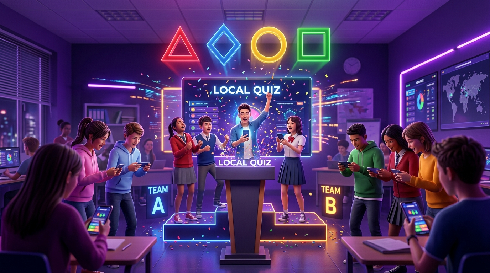

A emoção do Kahoot na sala de aula, sem gastar 1 MB de internet!
Projetado para vencer o maior desafio das escolas públicas: a falta de conexão. O notebook do professor gera uma rede Wi-Fi local própria e os alunos jogam simultaneamente pelos seus celulares lendo um QR Code na lousa. Sem contas pagas, sem anúncios e com jogadores ilimitados.

Por que Criamos uma Versão 100% Offline?
O Kahoot original é uma excelente ferramenta pedagógica, mas na prática cotidiana da maioria das escolas públicas do Brasil ele se torna inviável.
As Barreiras na Escola Pública
- Dependência Crítica de Internet: Qualquer oscilação na rede derruba a partida e desmotiva a turma inteira.
- Limitação Estrita de Jogadores: Planos gratuitos limitam severamente a quantidade de alunos conectados.
- Consumo de Dados dos Alunos: Nem todos os estudantes possuem pacotes de 4G para carregar imagens pesadas.
- Anúncios e Burocracia: Telas intermediárias de propaganda e exigência de cadastros/logins constantes.
A Liberdade da Rede Local
- 100% Desconectado da Internet: Funciona mesmo se a escola inteira estiver sem sinal de internet ou luz de rede externa.
- Jogadores Ilimitados & Sem Planos: Conecte 40, 50 ou mais alunos simultaneamente na rede local do notebook.
- Conexão Instantânea via QR Code: O aluno apenas aponta a câmera para a lousa e já está no jogo em 3 segundos.
- Sons Nativos Sintetizados: Áudio interativo criado em código puro (Web Audio API) sem baixar nenhum arquivo externo.
- Editor de Quizzes Integrado: Crie seus próprios questionários para qualquer matéria pelo próprio navegador.
Simulador Interativo do Jogo
Veja como os alunos vivenciam a resposta na tela do celular. Escolha a resposta correta antes que o cronômetro chegue a zero!
Qual é a área de um círculo cujo raio mede 3 metros? (Considere π = 3,14)
💡 No jogo real em sala de aula, as perguntas e alternativas são projetadas na lousa pelo notebook, e a tela do smartphone do aluno exibe os 4 botões coloridos de resposta rápida com pontuação por velocidade!
O Segredo da Conexão sem Gastar Internet
Entenda a engenharia simples e engenhosa que permite aos celulares conversarem com o computador do professor sem precisar de roteador externo.
Notebook do Professor
Servidor Local (Node.js)Ativa o Ponto de Acesso Móvel do Windows (Hotspot Wi-Fi). Processa as respostas e projeta o placar na lousa.
Sem Dados / < 10ms
Celulares dos Alunos
Clientes WebConectam na rede do notebook e abrem o jogo no navegador escaneando o QR Code na lousa.
Como Jogar em Sala: Guia em 4 Passos
Criado pensando em professores que não têm tempo para configurações complexas. Tudo funciona com arquivos de 1 clique.
Instalação Inicial (1 Vez)
Baixe a pasta do jogo e dê dois cliques no arquivo:
instalar_dependencias.bat
Ele baixa as bibliotecas necessárias de forma 100% automática.
Ligue o Ponto de Acesso
No Windows, pressione Win + I → Rede e Internet → Ponto de Acesso Móvel e clique em Ativado.
Dica: Crie uma rede chamada Quiz-Matematica com senha fácil (ex: 12345678).
Inicie a Partida
Dê dois cliques no arquivo:
iniciar_quiz.bat
O servidor liga e o navegador abre na hora com o QR Code gigante para projetar!
Alunos no Jogo & Pódio
Os estudantes apontam o celular para o QR Code, digitam seus nomes e a partida começa com ranking ao vivo e confetes!
Downloads & Documentação Oficial
Baixe o código-fonte completo pronto para rodar e o manual pedagógico formatado para impressão.
kahoot-local-pibid.zip
Contém o servidor Node.js, scripts executáveis (.bat), quizzes de demonstração de Matemática e o editor integrado.
Manual_Kahoot_Local_PIBID.pdf
Guia impresso passo a passo com ilustrações para distribuição entre professores e bolsistas do PIBID.
Você também pode clonar o projeto via terminal:
git clone https://github.com/axlseabr-tech/kahoot-local-pibid.gitPerguntas Frequentes dos Professores
Não, absolutamente zero! Os alunos se conectam ao Wi-Fi local gerado pelo próprio computador do professor. Toda a comunicação ocorre dentro da sala de aula, sem consumir nenhum dado de operadora de celular.
O sistema foi construído em Node.js com WebSockets ultraleves. Uma placa de rede sem fio padrão de notebook atende com folga entre 40 e 50 celulares simultâneos com latência inferior a 10 milissegundos.
Sim! O jogo possui um Editor Visual de Quizzes embutido. Você pode criar questionários de Física, História, Geografia, Biologia, Língua Portuguesa ou qualquer outro tema com alternativas personalizadas e tempos ajustáveis de 10 a 60 segundos.
É 100% seguro! O Windows SmartScreen exibe esse aviso preventivo padrão para qualquer script executável (.bat) baixado da internet que não possui uma assinatura digital comercial da Microsoft.
Como desbloquear:
Clique com o botão direito do mouse no arquivo iniciar_quiz.bat (ou instalar_dependencias.bat) → selecione Propriedades → na aba Geral, marque a caixinha [✓] Desbloquear (Unblock) no rodapé e clique em OK. Pronto, o arquivo estará liberado permanentemente!
Você pode colocar o notebook em cima de uma mesa no centro da sala ou virado para a turma. O ideal é usar projetor ou TV HDMI, mas o jogo roda perfeitamente apenas com a tela do computador.
Canais de Contato & Feedback
Precisa de auxílio para instalar o jogo na sua escola, tem dúvidas técnicas ou quer compartilhar como foi a aplicação em sala de aula? Fale com o desenvolvedor!
Fale com Axl Seabra
Bolsista desenvolvedor do projeto PIBID Matemática • UFRR. Atendimento direto para professores e escolas:
Mural de Comentários do Kahoot
Você já jogou com seus alunos ou testou o simulador? Deixe seu comentário: